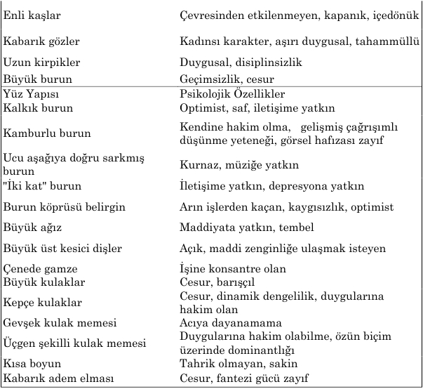

Ara ş t ı rma Serisi No.13
¯¯¯¯¯¯¯¯¯¯¯¯¯¯¯¯¯¯¯¯¯¯¯¯¯¯¯¯¯¯¯¯¯¯
28
Yüz Okuma Sanat ı
¯¯¯¯¯¯¯¯¯¯¯¯¯¯¯¯¯¯¯¯¯¯¯¯¯¯¯¯¯¯¯¯¯¯

Tarihi ş ahsiyetlerin yüz çizgilerinin incelenmesi her zaman ilginç sonuçlar vermi ş tir. Örne ğ in, Winston Churchill'in çene yap ı s ı n ı bulldog çenesine benzetmi ş lerdir. Bu anlamda, Bat ı l ı siyasi ak ı mlar ı n mensuplar ı onu bulldog gibi azimli birisi olarak de ğ erlendirmi ş lerdir. Çevresindekileri her zaman itaat al- t ı nda bulundurmu ş , ona kar ş ı gelenleri bast ı rm ı ş II. Yelizaveta'n ı n çene yap ı s ı egemen bir karakterin belirtisidir.
Saç dizimi M- ş ekilli bir biçime sahip olan Abraham Lincoln, yüksek ideallere sahip bir ki ş i olmu ş tur. Fizyognomi uzmanlar ı , Hitler'in yüzünde gaddarl ı ğ ı n tüm belirtilerinin oldu ğ unu ifade etmektedirler. Yüz derisi a ş ı r ı derecede gerilmi ş olmas ı onu ac ı mas ı z birisi oldu ğ unun göstergesidir. K ı sa, fakat enli al ı n onun zekal ı ve korkmaz oldu ğ unu ifade etmektedir. Ka ş lar ı ve gözleri aras ı nda küçük düzlem ş ekilli (ayr ı ca kalk ı k ve sert) bir bölgenin olmas ı onun demir iradeye sahip oldu ğ unun göstergesidir. Kabar ı k elmac ı k kemikleri ile orant ı l ı bir biçimde yerle ş mi ş yüksek burun s ı rt ı s ı n ı rs ı z bir hükümranl ı k arzusunun belirtisidir.
Ünlü İ spanyol ressam Vidal Quadras burun konumuyla ilgili kendi teorisini geli ş tirmi ş tir: "insan ı n burnu nas ı lsa, karakteri de öyledir. Quadras çok say ı da
__________________________________________________________________
© WWW.MAXIMUMBILGI.COM